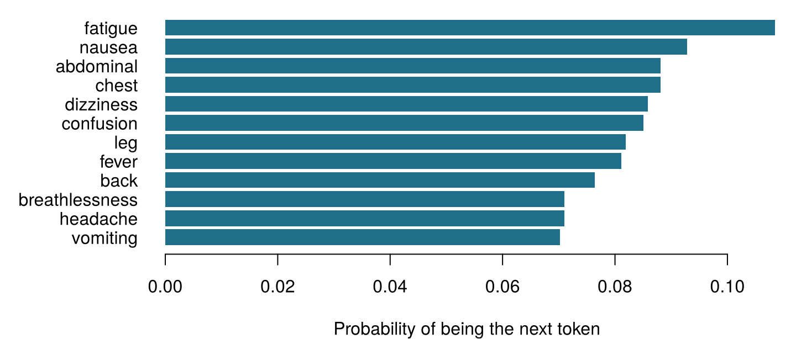
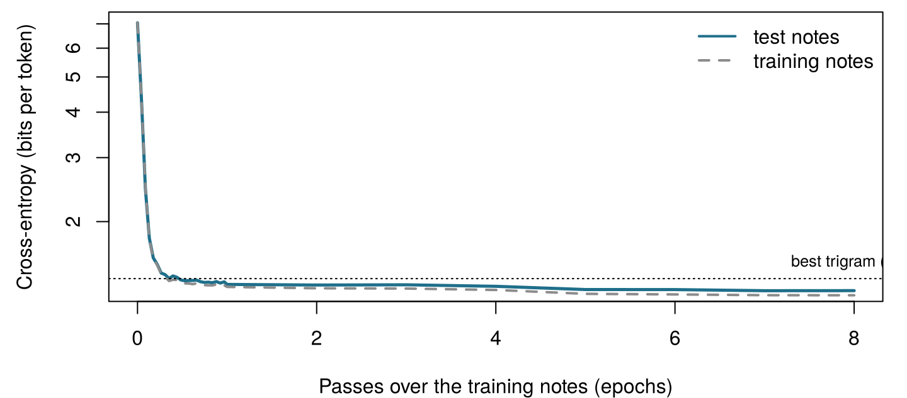

| note_id | set | text |
|---|---|---|
| N0001 | train | aki confirmed . |
| N0002 | train | patient reports vomiting . patient denies leg pain since yesterday . |
| N0004 | train | patient denies nausea since last night . |
| N0009 | train | patient reports breathlessness since this morning . patient reports headache since last night . |
| N0011 | train | started gentamicin today , patient complains of nausea , check gentamicin level tomorrow . |
| N0012 | train | lipase rising , pancreas function worsening . |
16 Predicting the next word: language models and embeddings
Before any formula, count. Here are six short notes from Ward 7.
patient reports pain . · patient reports nausea . · patient denies pain . · patient reports pain since yesterday . · patient reports fever . · no evidence of pain .
| Question | Your answer |
|---|---|
| How many times does the word reports appear? | |
| How many of those times is it followed by pain? | |
| So, from these notes, what is the probability that the word after reports is pain? (a number between 0 and 1) | |
| A system that always writes the most frequent next word types patient. What does it write next? |
How to use this chapter
Starting here?
This chapter borrows a few ideas from earlier chapters.
- Tokens and vocabulary (Chapter 15). A text is cut into tokens (words, pieces of words or characters, depending on the tokeniser); the set of distinct tokens is the vocabulary \(\mathcal{V}\), of size \(|\mathcal{V}|\), and the token at position \(t\) is written \(w_t\). Here the notes are already lower-case words and punctuation marks separated by spaces, so a token is simply a word or a punctuation mark.
- Probability, conditional probability and maximum likelihood (Chapter 2). \(P(A \mid B)\) is the probability of \(A\) when \(B\) is known; the maximum likelihood estimate of a proportion is the count of successes divided by the number of trials, \(k/n\).
- Entropy (Chapter 2): the average surprise of an outcome, \(-\log_2 P\), measured in bits. Chapter 2 promised that it returns as the loss that trains language models; it does in Section 16.5.
- Softmax and gradient descent (Chapter 7): softmax turns a list of scores into probabilities that add up to one; gradient descent adjusts a network’s weights to reduce a loss.
- Cosine similarity (Chapter 10, Chapter 15): the cosine of the angle between two vectors, 1 when they point the same way and 0 when they are perpendicular.
- Training and test data (Section 1.8): a model is judged on data it did not see while it was being built.
| Example | Who or what | Outcome | Faces you will meet |
|---|---|---|---|
| 1 Ward 7 ICU | 1 250 ICU patients in 4 hospitals | change in creatinine over 48 h (acute kidney injury if ≥ 0.3 mg/dL) | Aoife (71, sepsis, borderline risk), Tomás (54, low risk), Priya (38, high risk); Dr Emma Walsh; Seán, the pharmacist |
| 2 ONCO-1 trial | 1 000 patients randomised to chemotherapy or not | tumour shrinkage (%) | patients #0042 and #0917 |
| 3 HomeBeat | 500 people wearing a smartwatch at home | stress score, deterioration event | Lena |
| 4 CellWorks | 420 production batches of a cell therapy | potency score | batch CW-118 |
All four datasets are simulated and can be downloaded from the data appendix. The full introduction is in Section 1.1.
This chapter explains how a machine writes text, one token at a time. It has ten sections and a Lab, eight quick checks, four “Try it” widgets, a challenge and three coding missions in R and Python. Allow about 100 minutes. The models are small enough to understand completely and, apart from two that are trained in advance, to run in your browser.
Notation at a glance (for lookup only)
| Symbol | Meaning | Section |
|---|---|---|
| \(\mathcal{V}\), \(\lvert\mathcal{V}\rvert\) | vocabulary and its size | Section 16.2 |
| \(w_t\), \(w_{1:N}\) | token at position \(t\); a sequence of \(N\) tokens | Section 16.2 |
| \(w_{<t}\) | all tokens before position \(t\) (the context) | Section 16.2 |
| \(P_\theta(w_t \mid w_{<t})\) | next-token probability given by a model with parameters \(\theta\) | Section 16.2 |
| \(c(\cdot)\) | number of times a token or sequence occurs in the training notes | Section 16.4 |
| \(\delta\) | pseudo-count added in add-\(\delta\) smoothing | Section 16.4 |
| \(H(P)\), \(H(P, Q)\) | entropy and cross-entropy, in bits | Section 16.5 |
| \(D_{\text{KL}}(P \,\Vert\, Q)\) | Kullback–Leibler divergence | Section 16.5 |
| PPL | perplexity | Section 16.5 |
| \(\mathbf{z}\), \(z_j\) | logits (scores before softmax) | Section 16.6 |
| \(\tau\) | sampling temperature | Section 16.6 |
| \(\mathbf{e}_w\), \(\mathbf{E}\), \(d\) | embedding of token \(w\); embedding matrix; embedding dimension | Section 16.7 |
| \(\mathbf{h}_t\) | hidden state after reading token \(t\) | Section 16.9 |
The full list is on the notation page.
16.1 The data: eight thousand short notes
Language models learn from text, so we need a corpus. Real clinical notes are protected health information and cannot be shipped with a book, so this chapter uses 8 000 simulated Ward 7 notes, generated by a small grammar with a fixed random seed (sim_ch16_ward7_notes.py). They describe no real person. Each note has one or two short clauses — a symptom, a drug started, a laboratory trend, a negation, a plan, a remark by a member of staff — and 7 147 of them form the training set, the remaining 853 the test set.
The training notes contain 65 431 tokens drawn from a vocabulary of only 129 distinct words and punctuation marks. That is tiny next to the hundreds of billions of tokens used to train modern language models (Brown et al. 2020), and the notes are far more repetitive than real clinical writing. This is deliberate: because the grammar that generated the notes is known, we can check what each model has learned, as we did with the simulated datasets of earlier chapters. The grammar also hides three traps that we will spring later: drugs of the same class appear in similar sentences; some notes name a drug and ask, a clause or two later, to check the level of that same drug; and the pronoun that follows each staff role is deliberately unbalanced, as it is in much real text.
16.2 A language model assigns probabilities to the next token
The autocomplete on Seán’s screen does one thing: given the text so far, it gives every token in its vocabulary a probability of coming next, and shows the most probable one. After “patient reports” the Ward 7 notes continue with a symptom or a body site. Counting what follows those two words in the training notes gives the probabilities in Figure 16.1.

Definition 16.1 (Language model) A language model is a probability distribution over sequences of tokens. In practice it is specified by its next-token probabilities \(P_\theta(w_t \mid w_{<t})\): for every position \(t\) and every possible context \(w_{<t} = (w_1, \dots, w_{t-1})\), a probability for each token of the vocabulary, adding up to one. The parameters \(\theta\) are estimated from a training corpus (Jurafsky and Martin 2026, ch. 3).
Two operations follow from this definition. Scoring: the model can say how probable a whole text is, which lets us compare models and spot unusual text. Generation: the model can write, by choosing a next token from its distribution, appending it to the text, and repeating. A chatbot answering a question does exactly this, token after token; the rest of Part V explains how much machinery can sit inside \(P_\theta\), but the outer loop never changes.
The idea is older than computers. In 1913 Andrei Markov counted, by hand, how often a vowel follows a vowel or a consonant in 20 000 letters of Pushkin’s Eugene Onegin, to show that the letters of a text are not independent draws (Markov 2006). In 1951 Claude Shannon asked people to guess the next letter of an English text and used their success rate to estimate how predictable English is (Shannon 1951). A language model plays Shannon’s guessing game.
The autocomplete suggests gentamicin. What, exactly, has the model computed?
16.3 The chain rule: the probability of a whole note
A note is a sequence of tokens \(w_1, w_2, \dots, w_N\). Its probability can always be written as a product of next-token probabilities. With two tokens, the definition of conditional probability from Chapter 2 gives \(P(w_1, w_2) = P(w_1)\,P(w_2 \mid w_1)\); applying it again and again gives the general rule.
Definition 16.2 (Chain rule of probability) For any sequence of tokens, \[ P(w_1, w_2, \dots, w_N) = P(w_1)\, P(w_2 \mid w_1)\, P(w_3 \mid w_1, w_2) \cdots P(w_N \mid w_1, \dots, w_{N-1}) = \prod_{t=1}^{N} P(w_t \mid w_{<t}) . \qquad(16.1)\] The rule is exact: it involves no assumption. It turns the impossible task of assigning a probability to every possible text into a sequence of next-token predictions (Jurafsky and Martin 2026, ch. 3).
To mark where a note starts and ends we add two special tokens, <s> (start) and </s> (end): the first prediction is \(P(w_1 \mid \texttt{<s>})\), and the model must also predict </s>, so that it learns when a note is finished. Table 16.2 applies Equation 16.1 to the note “patient reports chest pain .”, with each factor estimated by counting in the training notes how often the word follows the previous one (the method of the next section).
| Step | Previous token | Next token | Probability | Surprise (bits) |
|---|---|---|---|---|
| 1 | <s> |
patient |
0.207 | 2.28 |
| 2 | patient |
reports |
0.493 | 1.02 |
| 3 | reports |
chest |
0.088 | 3.50 |
| 4 | chest |
pain |
1.000 | 0.00 |
| 5 | pain |
. |
0.595 | 0.75 |
| 6 | . |
</s> |
0.729 | 0.46 |
Multiplying the six factors gives \(P(\text{note}) \approx\) 0.0039. That looks tiny, but it is the probability of this exact sequence among all the notes the model could write. Long texts have astronomically small probabilities, so small that computers round them to zero. The remedy is to add logarithms instead of multiplying probabilities: the log-probability of the note is the sum of the per-token log-probabilities, and minus that sum, in base 2, is the total surprise, 8.01 bits here. Every language model, from this table to the largest chatbot, is trained and evaluated on sums like this one.
One of the six probabilities in Table 16.2 is replaced by 0, because a model has never seen that pair of words. What happens to the probability of the whole note and to its total surprise?
16.4 n-gram models: predicting by counting
The chain rule asks for \(P(w_t \mid w_{<t})\) given the whole context, but most long contexts occur only once, or never, in any corpus. The oldest solution is to forget all but the last few tokens.
Definition 16.3 (n-gram model) An n-gram model assumes that the next token depends only on the previous \(n-1\) tokens (a Markov assumption): \[ P(w_t \mid w_{<t}) \approx P(w_t \mid w_{t-n+1}, \dots, w_{t-1}) . \] A bigram model (\(n = 2\)) looks at one previous token; a trigram model (\(n = 3\)) at two. The probabilities are estimated by counting, which is the maximum likelihood estimate: \[ \hat P(w_t \mid w_{t-1}) = \frac{c(w_{t-1}\, w_t)}{c(w_{t-1})} , \qquad(16.2)\] where \(c(\cdot)\) counts occurrences in the training corpus (Jurafsky and Martin 2026, ch. 3).
(The letter \(n\) here is the order of the model, a long-standing name; it has nothing to do with the number of instances \(n\) of earlier chapters.) Equation 16.2 is the \(k/n\) of Chapter 2 in new clothes: among the \(c(w_{t-1})\) times the previous token occurred, the proportion followed by \(w_t\). In the training notes reports occurs 1 282 times and is followed by chest in 8.8 % of them, so \(\hat P(\text{chest} \mid \text{reports}) =\) 0.088. You did the same calculation with six notes at the gate of this chapter.
A bigram writer. The widget counts every pair of consecutive tokens in the 7 147 training notes, then writes new notes by repeatedly drawing the next token in proportion to how often it followed the current one. Each row of the table is one factor of the chain rule. Choose a word below to see the distribution it draws from, and move the smoothing slider (explained after the widget) to see what happens to words that never followed it. Generate three notes.
The bigram writer produces locally sensible notes that sometimes wander: because it remembers only one token, it can start with a drug and end with a symptom, or repeat a clause. Its other weakness is in the table: a pair it has never seen gets probability zero, and, as the quick check showed, one zero makes a whole note impossible.
16.4.1 How sparse are the counts?
Longer contexts make predictions sharper but the counts thinner. With 130 possible tokens in a context position (the words plus <s>), there are 130 possible one-token contexts, 16 900 two-token contexts, and so on. Table 16.3 shows how few of them ever occur in the training notes.
| Model | Context length | Contexts seen | Possible contexts | Share seen |
|---|---|---|---|---|
| bigram | 1 | 130 | 130 | 1 |
| trigram | 2 | 398 | 16 900 | 0.024 |
| 4-gram | 3 | 1 429 | 2 197 000 | 0.00065 |
| 5-gram | 4 | 3 338 | 285 610 000 | 1.2e-05 |
| 6-gram | 5 | 6 033 | 37 129 300 000 | 1.6e-07 |
Even in this small, repetitive corpus a 4-gram model has seen only a tiny fraction of the contexts it might meet. With a real vocabulary of tens of thousands of tokens the problem is overwhelming: most perfectly ordinary sentences contain word sequences that no corpus has ever recorded.
16.4.2 Smoothing: never say never
Look at the word meropenem. In the Ward 7 notes it is always the antibiotic someone switches to, never one that is started, so \(\hat P(\text{meropenem} \mid \text{started}) =\) 0. A note reading “started meropenem for sepsis” would be declared impossible, although any pharmacist knows it is ordinary. Smoothing moves a little probability from what was seen to what was not.
Definition 16.4 (Smoothing) Smoothing adjusts count-based probabilities so that no possible token has probability zero. The simplest version, add-\(\delta\) smoothing, adds a pseudo-count \(\delta > 0\) to every count: \[ \hat P_\delta(w_t \mid w_{t-1}) = \frac{c(w_{t-1}\, w_t) + \delta}{c(w_{t-1}) + \delta\, |\mathcal{V}|} , \qquad(16.3)\] where \(|\mathcal{V}|\) is the number of tokens that can follow. With \(\delta = 1\) it is called Laplace or add-one smoothing (Jurafsky and Martin 2026, ch. 3).
started occurs 1 463 times in the training notes and there are 130 possible next tokens (the 129 words and punctuation marks, plus </s>), so with add-one smoothing \(\hat P_1(\text{meropenem} \mid \text{started}) = 1 / (1463 + 130) \approx\) 0.00063: small but no longer zero. The same amount goes to “started started” and “started ,”, which are not ordinary at all: smoothing cannot tell plausible gaps from absurd ones, and in the next sections embeddings will. \(\delta\) is a hyperparameter, to be chosen on validation data (Chapter 3); you can watch its effect in the widget above. Better schemes exist, such as backoff to shorter contexts and Kneser–Ney smoothing, and were the state of the art for decades (Katz 1987; Kneser and Ney 1995; Chen and Goodman 1999).
A trigram model trained on the Ward 7 notes is used on discharge letters from the cardiology ward. Which statement is most accurate?
Count your own bigram. The training notes are loaded for you and cut into a table of consecutive token pairs, bigrams, with columns prev and nxt (<s> and </s> mark the start and end of each note). Using Equation 16.2, estimate the probability that the token after denies is fever. Fill in the blank.
The blank is the word whose probability you want, written as a string in quotes.
mean(after == "fever")The blank is the word whose probability you want, written as a string in quotes.
(after == "fever").mean()16.5 Cross-entropy and perplexity: how surprised is the model?
We now have several language models — bigram or trigram, with more or less smoothing — and need a way to compare them. As always, the comparison is made on text the models have not seen: the 853 test notes. A good model is one that is not surprised by them, that is, one that gave high probability to the tokens that actually came next. Chapter 2 measured surprise in bits; here is the general version.
Definition 16.5 (Cross-entropy) If outcomes follow a distribution \(P\) but we predict them with a model \(Q\), the cross-entropy is the average surprise we experience: \[ H(P, Q) = -\sum_{w} P(w) \log_2 Q(w) . \] It is never smaller than the entropy \(H(P) = -\sum_w P(w) \log_2 P(w)\), and the difference is the Kullback–Leibler divergence, \(D_{\text{KL}}(P \,\Vert\, Q) = H(P, Q) - H(P) \ge 0\), which is zero only when \(Q = P\) (Cover and Thomas 2006; Kullback and Leibler 1951). For a language model on a test text of \(N\) tokens we do not know \(P\), but the text is a sample from it, so the cross-entropy is estimated by the average surprise per token: \[ \hat H = -\frac{1}{N} \sum_{t=1}^{N} \log_2 P_\theta(w_t \mid w_{<t}) . \qquad(16.4)\]
A small example makes the identity concrete. If the true next-token distribution over three words is \(P = (0.7, 0.2, 0.1)\) and a model predicts \(Q = (0.6, 0.3, 0.1)\), then \(H(P) =\) 1.157 bits, \(H(P, Q) =\) 1.195 bits and the KL divergence is the difference, 0.039 bits: the extra surprise caused by using a slightly wrong model. Because \(H(P)\) does not depend on the model, minimising cross-entropy is the same as minimising the KL divergence from the truth, and it is also the same as maximising the likelihood of the training text (the average surprise is minus the log-likelihood divided by \(N\)). This is the loss that trains every language model in this chapter and the next two, exactly as it trained the classifiers of Chapter 5, where the “vocabulary” had only two entries, AKI or not.
Definition 16.6 (Perplexity) The perplexity of a model on a test text is two raised to its cross-entropy in bits: \[ \text{PPL} = 2^{\hat H} = \left( \prod_{t=1}^{N} P_\theta(w_t \mid w_{<t}) \right)^{-1/N} . \] It can be read as the effective number of equally likely choices the model is hesitating between at each step: a model that spread its probability evenly over 8 tokens would have a perplexity of 8. Lower is better (Jurafsky and Martin 2026, ch. 3).
(With natural logarithms, as in most software, the same quantity is \(e^{\hat H}\); the number does not change. The “perplexity” setting of t-SNE in Chapter 10 is the same idea applied to a distribution over neighbours (Maaten and Hinton 2008).) Table 16.4 compares the models on the 8 639 predictions needed for the test notes.
| Model | Cross-entropy (bits per token) | Perplexity |
|---|---|---|
| Unigram (no context), add-0.01 | 5.887 | 59.20 |
| Bigram, add-one (Laplace) | 1.956 | 3.88 |
| Bigram, add-0.01 | 1.700 | 3.25 |
| Trigram, add-one (Laplace) | 1.961 | 3.89 |
| Trigram, add-0.01 | 1.394 | 2.63 |
| Neural, window of 3 tokens | 1.292 | 2.45 |
| LSTM (whole note) | 1.217 | 2.32 |
Read it from top to bottom. A model with no context at all (unigram) hesitates between about 59 tokens at every step. Using one previous token cuts that to 3.2, using two to 2.6. Smoothing matters too, and not in an obvious way: with add-one smoothing the trigram model is no better than the bigram one (3.89 against 3.88), because adding 1 to each of 130 possible counts swamps the few observations available for each two-token context. A small \(\delta\) works much better here. (We chose \(\delta\) from a short list while looking at the test notes, which, as Chapter 3 warned, makes these test numbers slightly optimistic; a validation set would be the honest way.) Notice also how low all the numbers are: real English has perplexities in the tens or hundreds under good models (Jurafsky and Martin 2026, ch. 3; Radford et al. 2019), but the Ward 7 notes come from a small grammar and are very predictable. Perplexity measures a model on a particular text: numbers from different corpora or different tokenisers cannot be compared.
Model A has a perplexity of 3.2 on the Ward 7 test notes; model B has a perplexity of 45 on a collection of real discharge letters. Which model is better?
Perplexity by hand. A bigram model with add-0.01 smoothing gave, to each of the 10 tokens of the test note “started gentamicin today , check gentamicin level tomorrow .” (its nine tokens plus </s>), the probabilities in the vector p. Compute the perplexity of the model on this note: two to the power of the average surprise in bits.
Base-2 logarithms in R: log2().
2^(-mean(log2(p)))Base-2 logarithms in numpy: np.log2().
2 ** (-np.mean(np.log2(p)))16.6 From probabilities to text: softmax, temperature and sampling
Count-based models produce probabilities directly. Neural language models, like the classifiers of Chapter 7, produce instead one real-valued score per token of the vocabulary, the logits \(\mathbf{z} = (z_1, \dots, z_{|\mathcal{V}|})\), and the softmax turns them into probabilities: \(P(w_j) = e^{z_j} / \sum_{k} e^{z_k}\). With three candidate words and logits \(\mathbf{z} = (2.5, 1.0, 0.3)\), the probabilities are 0.750, 0.167 and 0.083 (Figure 16.2). This is the step Chapter 5 promised: softmax is the logistic function generalised from two outcomes to as many as there are tokens (Goodfellow, Bengio, and Courville 2016, sec. 6.2.2).
How should the model then pick the next token? The choice is called decoding, and it has a large effect on what the text looks like.
Definition 16.7 (Decoding: greedy, sampling, temperature, top-k, top-p) Greedy decoding always takes the most probable token: it is deterministic and tends to repeat itself. Sampling draws the next token at random in proportion to its probability, so the same prompt can give different texts. Two knobs shape the distribution before sampling. The temperature \(\tau > 0\) divides the logits before the softmax, \[ P_\tau(w_j) = \frac{e^{z_j / \tau}}{\sum_k e^{z_k / \tau}} , \qquad(16.5)\] so that \(\tau < 1\) sharpens the distribution (as \(\tau \to 0\) sampling becomes greedy) and \(\tau > 1\) flattens it (as \(\tau \to \infty\) every token becomes equally likely). Top-\(k\) sampling keeps only the \(k\) most probable tokens and renormalises (Fan, Lewis, and Dauphin 2018); top-\(p\) (nucleus) sampling keeps the smallest set of most probable tokens whose probabilities add up to at least \(p\) (Holtzman et al. 2020).
With the logits above, \(\tau = 0.5\) gives probabilities 0.942, 0.047 and 0.012; \(\tau = 2\) gives 0.554, 0.262 and 0.184. The order never changes; only how decisively the model commits to it.
Turn the temperature knob. The distributions below come from the small neural language model of Section 16.8, trained on the Ward 7 notes: for each context it produced one logit for each of the 131 tokens. Choose a context, then move the temperature and top-\(k\) sliders and draw samples. The effective number of choices is \(2^H\), the perplexity of the distribution itself. Task: after “patient reports”, find a setting where the model is choosing among fewer than two effective options, and then one where it is choosing among more than twenty.
Try the context “the surgeon says”. At \(\tau = 1\) the model gives he a probability of 87 % and she 13 %, almost exactly the shares in the training notes, where 87 % of surgeons are followed by he. Lower the temperature and she disappears altogether: a greedy autocomplete always writes he, an exaggeration of a skew that was already in the data. That is what happened on Seán’s screen.
Two lessons for clinical use follow. First, generation involves chance: unless decoding is greedy, the same prompt can produce different notes, so a system’s output on one occasion is a sample, not the answer. Second, a fluent sample is not a checked fact. The model writes what is probable given its training text, and the probable and the true can part company; text that is fluent, confident and wrong is called a hallucination (Ji et al. 2023), and Chapter 18 examines how to detect and limit it. For drafting clinical documentation, low temperatures are usually preferred because consistency matters more than variety.
A hospital configures its note-drafting assistant with a temperature close to 0. Which consequence should the clinical safety officer expect?
16.7 From one-hot vectors to embeddings
Count-based models treat every token as an unrelated symbol. To a bigram model, vancomycin and gentamicin are as different as vancomycin and tomorrow; what it learns about one tells it nothing about the other. In vector form, each token is a one-hot vector: a vector of length \(|\mathcal{V}|\) with a 1 in the token’s own position and 0 everywhere else. Any two different one-hot vectors are perpendicular, so their cosine similarity is exactly 0: every word is equally unlike every other.
Definition 16.8 (Embedding) An embedding represents each token \(w\) by a dense vector \(\mathbf{e}_w\) of \(d\) real numbers, with \(d\) much smaller than \(|\mathcal{V}|\) (here \(d =\) 24; in large models a few thousand). The vectors are the rows of an embedding matrix \(\mathbf{E}\) of size \(|\mathcal{V}| \times d\), and looking up a token’s embedding is the same as multiplying its one-hot vector by \(\mathbf{E}\). The entries of \(\mathbf{E}\) are parameters learned from data, so that tokens used in similar ways end up with similar vectors (Jurafsky and Martin 2026, ch. 5).
Why should usage give similar vectors? Because of an old idea from linguistics.
Definition 16.9 (Distributional hypothesis) Words that occur in similar contexts tend to have similar meanings (Z. S. Harris 1954). In Firth’s phrase, “you shall know a word by the company it keeps” (Firth 1957).
In the Ward 7 notes, vancomycin and gentamicin both appear in “started … for sepsis”, “… dose adjusted for kidney function” and “check … level tomorrow”. A method that places words with similar neighbours close together will therefore place these two close together, without being told that both are antibiotics. The best-known such method is word2vec.
Definition 16.10 (Skip-gram (word2vec)) The skip-gram model learns embeddings by turning the corpus into a prediction task: for each word, predict the words within a small window around it (here, two words on each side). Each word has an input vector and an output vector; the model is trained, by gradient descent, to give a high score \(\sigma(\mathbf{u}_{o}^\top \mathbf{e}_{c})\) to pairs that really occur together and a low score to random negative pairs (Mikolov, Chen, et al. 2013; Mikolov, Sutskever, et al. 2013). Once trained, the prediction task is thrown away and the vectors are kept. GloVe obtains similar vectors from a table of co-occurrence counts (Pennington, Socher, and Manning 2014).
We trained a skip-gram model with \(d =\) 24 on the training notes, in a few seconds, with the script ch16_language_models.py; as GloVe does, each word’s embedding is the sum of its input and output vectors (Pennington, Socher, and Manning 2014). No pharmacology, anatomy or staffing information went in: only the notes.
Explore the embeddings. Each dot is a word of the Ward 7 notes, placed by a two-dimensional projection (principal components, Chapter 10; Jolliffe and Cadima (2016)) of its 24-dimensional embedding. The projection keeps only 33 % of the variation, so judge closeness by the cosine similarities in the table, which use all 24 dimensions. Colours show categories we assigned; the model never saw them. The analogy box computes \(\mathbf{e}_b - \mathbf{e}_a + \mathbf{e}_c\) and lists the nearest words (excluding \(a\), \(b\) and \(c\)). Task: make the analogy box answer cardiology.
The nearest neighbour of vancomycin is gentamicin (cosine 0.98), and the symptoms crowd together in one region. Two other things are worth noticing. The neighbours mix two kinds of relation: words used instead of each other (gentamicin for vancomycin) and words used with each other (level, today), because summing input and output vectors mixes both. And meropenem, always the drug switched to in these notes, has as neighbours to, piperacillin, dose: embeddings reflect how a word is used in a particular corpus, not what it is.
16.7.1 Analogies, and their biases
Embeddings became famous for analogies: in vectors trained on news text, the vector \(\mathbf{e}_{\text{king}} - \mathbf{e}_{\text{man}} + \mathbf{e}_{\text{woman}}\) lies close to \(\mathbf{e}_{\text{queen}}\) (Mikolov, Sutskever, et al. 2013). The Ward 7 embeddings do something similar (Table 16.5), and fail just as instructively.
| Analogy | Nearest word | Cosine | Runner-up |
|---|---|---|---|
| kidney : creatinine :: liver : ? | bilirubin | 0.921 | troponin |
| kidney : creatinine :: heart : ? | troponin | 0.938 | rising |
| kidney : nephrology :: liver : ? | hepatology | 0.870 | raised |
| creatinine : nephrology :: troponin : ? | cardiology | 0.876 | raised |
| vancomycin : sepsis :: furosemide : ? | oedema | 0.774 | aki |
| morphine : pain :: noradrenaline : ? | check | 0.628 | yesterday |
Most of them work: kidney is to creatinine as liver is to bilirubin; kidney is to nephrology as liver is to hepatology. The last one fails: pain occurs far more often as a symptom (“patient reports chest pain”) than as the reason for giving a drug, so its vector says little about what analgesics are for. Analogy results are also flattered by a convention, the exclusion of the three query words, without which the answer is often simply \(c\) itself (Nissim, Noord, and Goot 2020). Treat them as a window into the geometry, not as reasoning.
The same geometry records whatever associations the corpus contains, including unwelcome ones. Embeddings trained on news text place man close to computer programmer and woman close to homemaker (Bolukbasi et al. 2016), and reproduce the implicit associations measured in people (Caliskan, Bryson, and Narayanan 2017). Clinical text is no exception: language models trained on intensive care notes complete sentences differently depending on a patient’s gender, ethnicity or insurance (Zhang et al. 2020). In our simulated notes, the pronoun after each staff role was deliberately unbalanced (she follows nurse in 88 % of mentions and surgeon in only 13 %). Table 16.6 shows that the embeddings have absorbed exactly that ranking.
| Role | Followed by “she” in the notes | Cosine with she | Cosine with he | Difference |
|---|---|---|---|---|
| nurse | 88 % | 0.84 | 0.65 | 0.20 |
| physiotherapist | 75 % | 0.82 | 0.67 | 0.15 |
| pharmacist | 51 % | 0.69 | 0.68 | 0.01 |
| doctor | 38 % | 0.77 | 0.83 | -0.06 |
| consultant | 18 % | 0.66 | 0.87 | -0.20 |
| surgeon | 13 % | 0.60 | 0.82 | -0.21 |
In the embeddings, furosemide and bumetanide are close neighbours. Why?
The embeddings put surgeon closer to he than to she. A colleague proposes to fix this by deleting the words he and she from the vocabulary. What is the main problem with that fix?
Nearest neighbours by cosine. The 24-dimensional embeddings are loaded as the matrix E (one row per word, with the words as row names). Complete the function that computes the cosine similarity of two vectors — their dot product divided by the product of their lengths — and find the words closest to furosemide.
The length (norm) of a is sqrt(sum(a^2)). Put the product of the two lengths in parentheses.
cos_sim <- function(a, b) sum(a * b) / (sqrt(sum(a^2)) * sqrt(sum(b^2)))np.linalg.norm(a) is the length of a. Put the product of the two lengths in parentheses.
cos_sim = lambda a, b: np.sum(a * b) / (np.linalg.norm(a) * np.linalg.norm(b))16.8 A tiny neural language model, built once
We can now put the pieces together. In 2003, Yoshua Bengio and colleagues replaced the count table of an n-gram model with a small neural network that reads the embeddings of the previous few tokens and outputs a softmax over the vocabulary (Bengio et al. 2003). The network and the embeddings are trained together, by gradient descent on the cross-entropy loss. Because similar tokens get similar embeddings, what the network learns about one context transfers to similar ones, which a count table cannot do.
Written out, with the embeddings of the previous three tokens joined end to end into \(\mathbf{x} = (\mathbf{e}_{w_{t-3}}, \mathbf{e}_{w_{t-2}}, \mathbf{e}_{w_{t-1}})\), the model is \[ \mathbf{h} = \tanh\!\big(\mathbf{W}^{(1)} \mathbf{x} + \mathbf{b}^{(1)}\big), \qquad \mathbf{z} = \mathbf{W}^{(2)} \mathbf{h} + \mathbf{b}^{(2)}, \qquad P_\theta(w_t = j \mid w_{t-3}, w_{t-2}, w_{t-1}) = \frac{e^{z_j}}{\sum_k e^{z_k}} . \qquad(16.6)\] Everything in it has appeared before: a lookup in \(\mathbf{E}\) (this section), a hidden layer with a nonlinear activation and a softmax output (Chapter 7), trained with the cross-entropy of Equation 16.4. Ours uses 16-dimensional embeddings, 128 hidden units and a window of 3 tokens: in total 25 267 parameters, trained with the Adam optimiser (Kingma and Ba 2015) for 8 passes over the 72 578 training predictions. The Lab writes the same model in about forty lines of base R or numpy (with 64 hidden units and plain gradient descent, to keep it short) and trains it in your browser; the version used in this chapter was trained once by the precompute script.

Untrained, the network spreads its probability almost evenly and has a cross-entropy of 7.05 bits, close to \(\log_2\) 131 \(=\) 7.03, the cost of guessing uniformly. After training it reaches 1.292 bits on the test notes, a perplexity of 2.45, better than the best trigram model (2.63). Its predictions are also sensible: after “started vancomycin for” it gives infection, pneumonia and sepsis probabilities of 0.41, 0.31 and 0.26, not far from the one-third each built into the grammar. Do not overrate it, though. It gives “started meropenem” a probability of about 0.00002, even less than add-one smoothing did, because in the notes meropenem never follows started or anything used like it. Sharing by similarity works only when the data provide the similarity.
16.8.1 Characters instead of words
The same recipe works with any tokens. Figure 16.5 follows a model that reads and writes one character at a time, trained on Tiny Shakespeare, a public-domain collection of Shakespeare’s plays (about 1 115 000 characters) that has become a standard teaching corpus (Karpathy 2015). We chose it over the Ward 7 notes because its vocabulary of 65 characters and its rich language make the stages of learning easy to see. The model is a recurrent network, the subject of the next section, with 333 169 parameters, trained for a few minutes on one processor.
Watch a model learn to write. Choose a stage of training and a sampling temperature. Each sample starts from the prompt ROMEO: and continues for 300 characters. The curve shows the validation cross-entropy in bits per character; the dashed line is a uniform guess among the 65 characters.
After 0 steps (6.02 bits per character):
ROMEO: JAbk nV &ne3XoblELzYIxIk,rS.mop'couAGng $ODdCxXCzStrkkmt!FDGq3HxVntxY$R;Y!wTgFpe&b!zyyn!e!KhjUQ,Q
After 300 steps (2.58 bits per character):
ROMEO: What wish to out to stive your may to so proos thou know thee with modes all to show your injoster! CAPRUSTES: My perous spucion made heavent but thou kinds of will leaves to her and of herd?
After 2 500 steps (2.23 bits per character):
ROMEO: What news, a oble soul so four matter. BORSET: My realty being and be changelo sheep need had deserved to that where it then in the care And perform'd the deed with the precious.
Before training the model types random characters. After a few hundred steps it has learned spaces, line breaks, capitalised speaker names and short common words; by the end it writes plausible-looking speeches with invented words and no sense. It has learned the form of the text, character by character, from the single task of predicting the next one. Scale the same idea up by many orders of magnitude, in data, parameters and computation, and the form starts to carry a great deal of content: that is the story of Chapter 18.
16.9 Remembering further back, and why that is not enough
Seán’s problem was a long-range one. In “started vancomycin today, patient reports nausea, check …”, the word that settles the next token, vancomycin, is eight tokens back. Every model so far looks at a fixed window: one token for the bigram, two for the trigram, three for our neural model. Whatever lies outside the window is invisible (Figure 16.6).

A recurrent neural network removes the fixed window by reading the text one token at a time and carrying a summary forward.
Definition 16.11 (Recurrent neural network and hidden state) A recurrent neural network (RNN) keeps a hidden state vector \(\mathbf{h}_t\) that is updated after each token from the previous state and the new token’s embedding, \[ \mathbf{h}_t = \tanh\!\big(\mathbf{W}_{h} \mathbf{h}_{t-1} + \mathbf{W}_{e}\, \mathbf{e}_{w_t} + \mathbf{b}\big), \] with the same weights at every position; the next-token distribution is a softmax of a linear function of \(\mathbf{h}_t\) (Elman 1990; Mikolov et al. 2010). In principle \(\mathbf{h}_t\) can carry information from any distance.
In practice, plain RNNs forget quickly.
Definition 16.12 (Vanishing gradient; LSTM) Training an RNN by backpropagation multiplies one factor per step back in time. Over many steps the product usually shrinks towards zero (or, less often, explodes), so the network receives almost no signal about how a word far back should have influenced the present: the vanishing gradient problem (Bengio, Simard, and Frasconi 1994). The long short-term memory (LSTM) network adds a separate memory cell and learned gates that decide, at each step, what to keep, what to forget and what to output; information can then travel many steps without fading (Hochreiter and Schmidhuber 1997).
We trained a small word-level LSTM on the Ward 7 notes, again in advance, with PyTorch (Paszke et al. 2019). Its test perplexity is 2.32, the best in Table 16.4, and Table 16.7 shows why.
| Context | Drug is … tokens back | Bigram | Trigram | Neural (window 3) | LSTM |
|---|---|---|---|---|---|
| …started gentamicin today , check ___ | 4 | 0.53 | 0.53 | 0.50 | 0.95 |
| …started gentamicin today , patient reports nausea , check ___ | 8 | 0.53 | 0.53 | 0.55 | 0.97 |
| …started gentamicin today , patient reports nausea , patient denies fever , check ___ | 12 | 0.53 | 0.53 | 0.61 | 0.95 |
| …started vancomycin today , check ___ | 4 | 0.47 | 0.47 | 0.50 | 0.92 |
| …started vancomycin today , patient reports nausea , check ___ | 8 | 0.47 | 0.47 | 0.45 | 0.89 |
| …started vancomycin today , patient reports nausea , patient denies fever , check ___ | 12 | 0.47 | 0.47 | 0.39 | 0.89 |
The bigram and trigram models give the same answer whichever drug was started: after check they always prefer gentamicin, the drug that follows check slightly more often in the training notes (286 times against 250). That is the suggestion Seán saw. The neural model with a window of three is no better off, since the drug is outside its window: its probabilities hover around one half and change only with the words that happen to precede check. The LSTM, which has read the whole note, gives the right drug a probability of about 0.93, even when the drug is twelve tokens back.
Recurrence is not the end of the story. An RNN must squeeze everything it has read into one fixed-length vector, updated strictly in order, so a long discharge letter is compressed through a bottleneck, and the computation cannot be spread over many processors at once because each step waits for the previous one. The fix, introduced first to help recurrent translation models (Bahdanau, Cho, and Bengio 2015) and then on its own (Vaswani et al. 2017), is to let the model look back directly at any earlier token and decide how much attention to pay to each. That is attention, the subject of Chapter 17.
Why can a trigram model never learn, however many notes it sees, to suggest the right drug after “started vancomycin today, patient reports nausea, check”?
Each problem below was met in this chapter. Which idea was introduced to address it?
- A count-based model gives probability zero to “started meropenem”, so a whole note becomes impossible. Smoothing
- What the model learns about vancomycin tells it nothing about gentamicin, because each word is an unrelated symbol. Embeddings
- The model cannot use a drug mentioned eight tokens before the word it must predict, because it only sees a fixed window. Recurrence
- A recurrent model must compress a whole discharge letter into one vector, processed strictly word by word. Attention
- “furosemide” and “bumetanide” should share what is learned about them, since they are used in the same way. Embeddings
- A trigram model meets a two-word context it has never seen in training. Smoothing
16.10 Where this fits in the decision loop
A language model is a way of building the model step when the data are text: it learns, from past notes, a probability for every possible next token (Section 16.2, Section 16.3). The information it produces is a distribution over words, and a suggestion drawn from it by a decoding rule (Section 16.6); perplexity says how well the distribution fits held-out text (Section 16.5), not whether a given sentence is true. What can go wrong? A fixed window misses what was said earlier (Section 16.9), as with the wrong drug on Seán’s screen; skews in the corpus are absorbed by the embeddings and exaggerated by greedy decoding (Section 16.7, Section 16.6); fluent text can be false. And the loop closes on itself: accepted suggestions become the notes on which the next model is trained, so an error or a bias that nobody corrects is learned again, more strongly (Shumailov et al. 2024). Who stays in control? The clinician who reads every suggestion before it enters the record, and the team that decides on what text a model is trained, how it decodes, and how its outputs are monitored.
16.11 Lab: building language models from counts and from a network
The Lab gathers the chapter in one script, in base R or in Python with numpy and pandas (R Core Team 2024; C. R. Harris et al. 2020; McKinney 2010): it counts bigrams, evaluates perplexity, samples notes at different temperatures, trains the tiny neural language model of Section 16.8 from scratch, and explores the precomputed embeddings. Run it here (training the neural model takes a few seconds in Python and a minute or two in R in the browser), or download it: ch16_lab.R · ch16_lab.py.
Two observations to take forward. First, after five passes with plain gradient descent the network clearly beats the smoothed bigram model on the test notes and roughly matches the best trigram model; the version used in the chapter, with more hidden units and the Adam optimiser, does better still. (R and Python draw different random numbers, so their results differ slightly.) Second, nothing in the code is specific to clinical text: change the file and the same forty lines learn any other corpus, together with its habits and its biases.
16.12 Exercises
- Counting by hand. Using the six notes of the gate, write the bigram probabilities \(\hat P(\cdot \mid \text{patient})\) and \(\hat P(\cdot \mid \texttt{<s>})\), and compute the probability of the note “patient reports pain .” (with
</s>) under this tiny model. - Chain rule. Explain in two sentences why the chain rule (Equation 16.1) is exact, while a bigram model is an approximation. Which assumption does the bigram model add?
- Smoothing. In the Lab, compute the add-\(\delta\) perplexity of the bigram model for \(\delta = 0.001\) and \(\delta = 0.0001\). Does it keep improving? What would happen with \(\delta = 0\), and why?
- Perplexity as a branching factor. A model assigns probability \(1/4\) to every token of a test text. What are its cross-entropy and its perplexity? What if it assigns \(1/2\) to half of the tokens and \(1/8\) to the other half?
- Temperature. In the temperature widget, choose “creatinine rising ,”. Why does the distribution barely change between \(\tau = 0.2\) and \(\tau = 1\), while “plan :” changes a lot?
- Embeddings. In the embeddings explorer, find a word whose nearest neighbour belongs to a different category. Explain the neighbour using the contexts in which both words appear in the notes.
- Bias. Suppose the Ward 7 autocomplete is retrained every month on the notes written that month, many of which were drafted with its suggestions. Describe what happens over time to the share of he after “the surgeon says” if suggestions are usually accepted. Propose two safeguards.
- Code. Modify the Lab’s neural model to use a window of 1 token instead of 3. Compare its test perplexity with the bigram model’s. What does the comparison tell you?
Selected answers
1. After <s>: patient 5/6, no 1/6. After patient: reports 4/5, denies 1/5. After reports: pain 2/4. pain occurs four times, followed by “.” three times and by since once, so \(\hat P(. \mid \text{pain}) = 3/4\). After “.”: </s> every time. The probability of the note is \(5/6 \times 4/5 \times 2/4 \times 3/4 \times 1 = 0.25\).
4. Probability \(1/4\) everywhere: surprise 2 bits per token, cross-entropy 2 bits, perplexity \(2^2 = 4\). Half at \(1/2\) (1 bit) and half at \(1/8\) (3 bits): average surprise 2 bits, so the perplexity is again 4. Perplexity summarises the average surprise; different patterns of confidence can give the same value.
5. After “creatinine rising ,” the grammar always continues with kidney, so one logit is far larger than all the others; dividing by any temperature up to 1 leaves it dominant. After “plan :” five continuations are equally common, their logits are close, and temperature reshapes the distribution strongly.
7. Each month the training notes contain a slightly higher share of he, because greedy suggestions always propose he and are usually accepted; the model learns the higher share and proposes he even more firmly: a feedback loop that amplifies the original skew. Safeguards: exclude machine-drafted text (or text accepted without edits) from retraining; monitor the outputs for known skews; use decoding that does not complete pronouns or names; make editing easy and expected.
8. With a window of one token the network sees exactly what the bigram model sees, so it cannot do much better; any gain comes from smoother estimates for rare pairs, not from more context. The comparison isolates the contribution of the longer window.
16.13 Summary
- A language model gives a probability to every possible next token given the text so far; it can score texts and, by repeatedly choosing a next token, generate them.
- The chain rule writes the probability of any text exactly as a product of next-token probabilities; we work with sums of log-probabilities to avoid rounding to zero.
- n-gram models estimate next-token probabilities by counting, using only the last \(n-1\) tokens. Counts become sparse very quickly, so they need smoothing to avoid zero probabilities.
- Cross-entropy — the average surprise per token on held-out text — is both the training loss and the evaluation measure; perplexity, \(2^{H}\), is the effective number of choices. It is comparable only on the same text and tokenisation.
- Softmax turns logits into probabilities; decoding turns probabilities into text. Temperature, top-\(k\) and top-\(p\) shape the distribution; low temperatures are repeatable but exaggerate the majority continuation. Generation involves chance, and fluent is not the same as true.
- Embeddings replace one-hot symbols with learned dense vectors. By the distributional hypothesis, words used in similar contexts get similar vectors (skip-gram, GloVe); the geometry supports analogies and also absorbs the biases of the corpus.
- A neural language model combines embeddings, a hidden layer and a softmax, trained by gradient descent on cross-entropy. Recurrent networks (and LSTMs, which ease the vanishing gradient) carry a hidden state beyond a fixed window, but still compress everything into one vector, read in order. That limitation motivates attention.
Where this chapter is used later
| Idea from this chapter | Where it returns |
|---|---|
| Next-token prediction and the chain rule | Chapter 17 (the causal mask of decoder transformers); Chapter 18 (pretraining large language models) |
| Cross-entropy and perplexity | Chapter 17 (the training loss of transformers); Chapter 18 (pretraining, and why benchmark scores are not clinical evaluation) |
| Softmax, temperature, top-\(k\)/top-\(p\) | Chapter 17 (softmax attention weights); Chapter 18 (hallucination, decoding settings for clinical use) |
| Embeddings and cosine similarity | Chapter 17 (token and position embeddings); Chapter 18 (dense retrieval in retrieval-augmented generation) |
| Bias absorbed from the corpus | Chapter 18 (fairness, evaluation and governance of clinical language models) |
| The fixed-window problem and recurrent networks | Chapter 17 (attention) |
| Learned representations in a low-dimensional space | Chapter 19 (latent spaces of generative models) |
Next: the LSTM found the right drug by carrying a summary forward, word by word. Chapter 17 lets every word look back at every other word directly, and builds from that single idea the transformer behind today’s language models.
References
Bahdanau, Dzmitry, Kyunghyun Cho, and Yoshua Bengio. 2015. “Neural Machine Translation by Jointly Learning to Align and Translate.” In 3rd International Conference on Learning Representations (ICLR). https://arxiv.org/abs/1409.0473.
Bengio, Yoshua, Réjean Ducharme, Pascal Vincent, and Christian Jauvin. 2003. “A Neural Probabilistic Language Model.” Journal of Machine Learning Research 3: 1137–55. https://www.jmlr.org/papers/v3/bengio03a.html.
Bengio, Yoshua, Patrice Simard, and Paolo Frasconi. 1994. “Learning Long-Term Dependencies with Gradient Descent Is Difficult.” IEEE Transactions on Neural Networks 5 (2): 157–66. https://doi.org/10.1109/72.279181.
Bolukbasi, Tolga, Kai-Wei Chang, James Y. Zou, Venkatesh Saligrama, and Adam T. Kalai. 2016. “Man Is to Computer Programmer as Woman Is to Homemaker? Debiasing Word Embeddings.” In Advances in Neural Information Processing Systems 29, 4349–57. https://proceedings.neurips.cc/paper/2016/hash/a486cd07e4ac3d270571622f4f316ec5-Abstract.html.
Brown, Tom B., Benjamin Mann, Nick Ryder, et al. 2020. “Language Models Are Few-Shot Learners.” In Advances in Neural Information Processing Systems 33, 1877–1901.
Caliskan, Aylin, Joanna J. Bryson, and Arvind Narayanan. 2017. “Semantics Derived Automatically from Language Corpora Contain Human-Like Biases.” Science 356 (6334): 183–86. https://doi.org/10.1126/science.aal4230.
Chen, Stanley F., and Joshua Goodman. 1999. “An Empirical Study of Smoothing Techniques for Language Modeling.” Computer Speech & Language 13 (4): 359–94. https://doi.org/10.1006/csla.1999.0128.
Cover, Thomas M., and Joy A. Thomas. 2006. Elements of Information Theory. 2nd ed. Hoboken, NJ: Wiley-Interscience. https://doi.org/10.1002/047174882X.
Elman, Jeffrey L. 1990. “Finding Structure in Time.” Cognitive Science 14 (2): 179–211. https://doi.org/10.1207/s15516709cog1402_1.
Fan, Angela, Mike Lewis, and Yann Dauphin. 2018. “Hierarchical Neural Story Generation.” In Proceedings of the 56th Annual Meeting of the Association for Computational Linguistics (Volume 1: Long Papers), 889–98. Melbourne, Australia: Association for Computational Linguistics. https://doi.org/10.18653/v1/P18-1082.
Firth, John R. 1957. “A Synopsis of Linguistic Theory, 1930–1955.” In Studies in Linguistic Analysis, 1–32. Oxford: Blackwell.
Goodfellow, Ian, Yoshua Bengio, and Aaron Courville. 2016. Deep Learning. Cambridge, MA: MIT Press. https://www.deeplearningbook.org.
Harris, Charles R., K. Jarrod Millman, Stéfan J. van der Walt, et al. 2020. “Array Programming with NumPy.” Nature 585 (7825): 357–62. https://doi.org/10.1038/s41586-020-2649-2.
Harris, Zellig S. 1954. “Distributional Structure.” Word 10 (2–3): 146–62. https://doi.org/10.1080/00437956.1954.11659520.
Hochreiter, Sepp, and Jürgen Schmidhuber. 1997. “Long Short-Term Memory.” Neural Computation 9 (8): 1735–80. https://doi.org/10.1162/neco.1997.9.8.1735.
Holtzman, Ari, Jan Buys, Li Du, Maxwell Forbes, and Yejin Choi. 2020. “The Curious Case of Neural Text Degeneration.” In 8th International Conference on Learning Representations (ICLR). https://openreview.net/forum?id=rygGQyrFvH.
Ji, Ziwei, Nayeon Lee, Rita Frieske, et al. 2023. “Survey of Hallucination in Natural Language Generation.” ACM Computing Surveys 55 (12): 1–38. https://doi.org/10.1145/3571730.
Jolliffe, Ian T., and Jorge Cadima. 2016. “Principal Component Analysis: A Review and Recent Developments.” Philosophical Transactions of the Royal Society A 374 (2065): 20150202. https://doi.org/10.1098/rsta.2015.0202.
Jurafsky, Daniel, and James H. Martin. 2026. Speech and Language Processing: An Introduction to Natural Language Processing, Computational Linguistics, and Speech Recognition with Language Models. 3rd (online manuscript). https://web.stanford.edu/~jurafsky/slp3/.
Karpathy, Andrej. 2015. “The Unreasonable Effectiveness of Recurrent Neural Networks.” Blog post, 21 May 2015. https://karpathy.github.io/2015/05/21/rnn-effectiveness/.
Katz, Slava M. 1987. “Estimation of Probabilities from Sparse Data for the Language Model Component of a Speech Recognizer.” IEEE Transactions on Acoustics, Speech, and Signal Processing 35 (3): 400–401. https://doi.org/10.1109/TASSP.1987.1165125.
Kingma, Diederik P., and Jimmy Ba. 2015. “Adam: A Method for Stochastic Optimization.” In 3rd International Conference on Learning Representations (ICLR). https://arxiv.org/abs/1412.6980.
Kneser, Reinhard, and Hermann Ney. 1995. “Improved Backing-Off for M-Gram Language Modeling.” In Proceedings of the 1995 International Conference on Acoustics, Speech, and Signal Processing (ICASSP), 1:181–84. Detroit, MI. https://doi.org/10.1109/ICASSP.1995.479394.
Kullback, Solomon, and Richard A. Leibler. 1951. “On Information and Sufficiency.” The Annals of Mathematical Statistics 22 (1): 79–86. https://doi.org/10.1214/aoms/1177729694.
Maaten, Laurens van der, and Geoffrey Hinton. 2008. “Visualizing Data Using t-SNE.” Journal of Machine Learning Research 9: 2579–2605. https://www.jmlr.org/papers/v9/vandermaaten08a.html.
Markov, Andrei A. 2006. “An Example of Statistical Investigation of the Text Eugene Onegin Concerning the Connection of Samples in Chains.” Science in Context 19 (4): 591–600. https://doi.org/10.1017/S0269889706001074.
McKinney, Wes. 2010. “Data Structures for Statistical Computing in Python.” In Proceedings of the 9th Python in Science Conference, 56–61. https://doi.org/10.25080/Majora-92bf1922-00a.
Mikolov, Tomas, Kai Chen, Greg Corrado, and Jeffrey Dean. 2013. “Efficient Estimation of Word Representations in Vector Space.” https://arxiv.org/abs/1301.3781.
Mikolov, Tomas, Martin Karafiát, Lukáš Burget, Jan Černocký, and Sanjeev Khudanpur. 2010. “Recurrent Neural Network Based Language Model.” In Proceedings of Interspeech 2010, 1045–48. https://doi.org/10.21437/Interspeech.2010-343.
Mikolov, Tomas, Ilya Sutskever, Kai Chen, Greg Corrado, and Jeffrey Dean. 2013. “Distributed Representations of Words and Phrases and Their Compositionality.” In Advances in Neural Information Processing Systems 26, 3111–19.
Nissim, Malvina, Rik van Noord, and Rob van der Goot. 2020. “Fair Is Better Than Sensational: Man Is to Doctor as Woman Is to Doctor.” Computational Linguistics 46 (2): 487–97. https://doi.org/10.1162/coli_a_00379.
Paszke, Adam, Sam Gross, Francisco Massa, et al. 2019. “PyTorch: An Imperative Style, High-Performance Deep Learning Library.” In Advances in Neural Information Processing Systems 32, 8026–37.
Pennington, Jeffrey, Richard Socher, and Christopher D. Manning. 2014. “GloVe: Global Vectors for Word Representation.” In Proceedings of the 2014 Conference on Empirical Methods in Natural Language Processing (EMNLP), 1532–43. https://doi.org/10.3115/v1/D14-1162.
R Core Team. 2024. R: A Language and Environment for Statistical Computing. Vienna, Austria: R Foundation for Statistical Computing. https://www.R-project.org/.
Radford, Alec, Jeffrey Wu, Rewon Child, David Luan, Dario Amodei, and Ilya Sutskever. 2019. “Language Models Are Unsupervised Multitask Learners.” Technical report. OpenAI. https://cdn.openai.com/better-language-models/language_models_are_unsupervised_multitask_learners.pdf.
Shannon, Claude E. 1951. “Prediction and Entropy of Printed English.” Bell System Technical Journal 30 (1): 50–64. https://doi.org/10.1002/j.1538-7305.1951.tb01366.x.
Shumailov, Ilia, Zakhar Shumaylov, Yiren Zhao, Nicolas Papernot, Ross Anderson, and Yarin Gal. 2024. “AI Models Collapse When Trained on Recursively Generated Data.” Nature 631 (8022): 755–59. https://doi.org/10.1038/s41586-024-07566-y.
Vaswani, Ashish, Noam Shazeer, Niki Parmar, Jakob Uszkoreit, Llion Jones, Aidan N. Gomez, Łukasz Kaiser, and Illia Polosukhin. 2017. “Attention Is All You Need.” In Advances in Neural Information Processing Systems 30, 5998–6008.
Zhang, Haoran, Amy X. Lu, Mohamed Abdalla, Matthew McDermott, and Marzyeh Ghassemi. 2020. “Hurtful Words: Quantifying Biases in Clinical Contextual Word Embeddings.” In Proceedings of the ACM Conference on Health, Inference, and Learning (CHIL), 110–20. https://doi.org/10.1145/3368555.3384448.